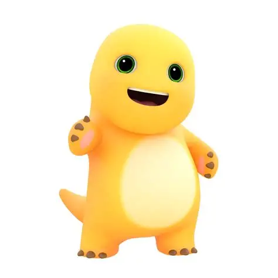
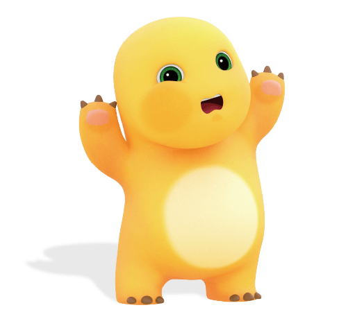
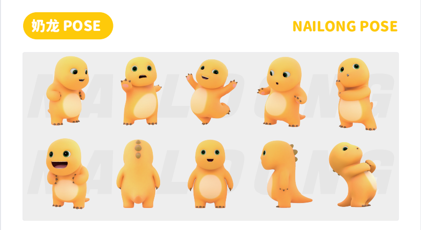
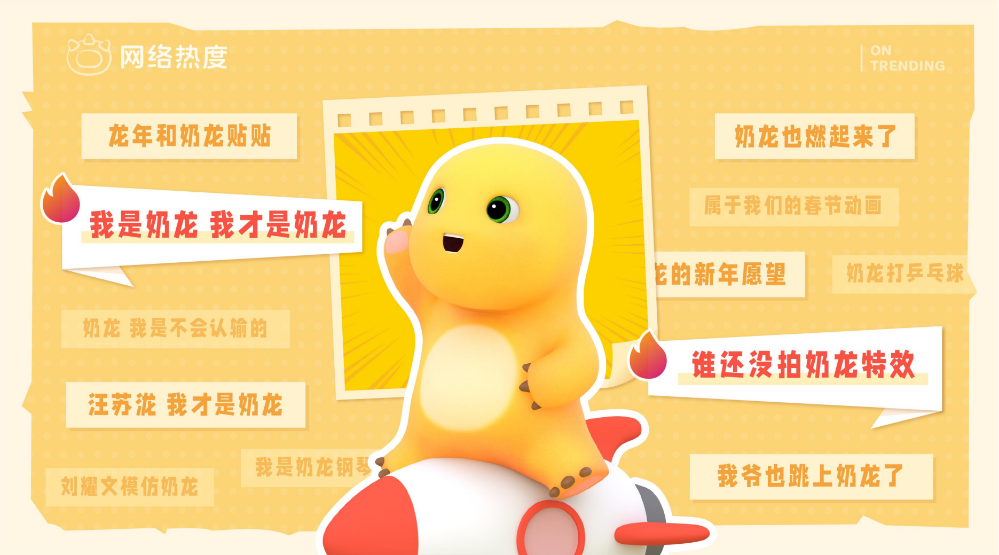
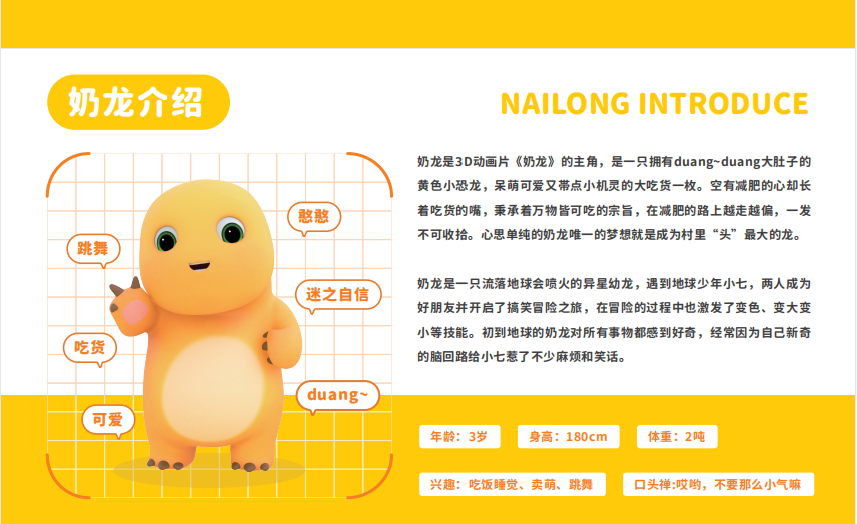

MURASAME / CHARACTER REFERENCE / 2026.10.29
先把奶龙看清楚，再把它做完整。
以你提供的照片为主要外观依据，补充同一基础三维形象的正面、侧面、背面和姿态资料。以下全部是来源图片，没有把我们的制作初稿当成参考图，也没有用生成图片补造“官方三视图”。
正面 / 侧面 / 背面10 种姿态官方网站形象原图与出处可查看
01 · 你的原照片
主要外观依据：大头、短粗四肢、绿边黑眼睛、浅黄色肚皮与笑嘴。

02 · 官方网站的完整形象
第七印象网站首页使用的奶龙图，用于交叉核对整体比例和手脚细节。

03 · 正面、侧面、背面
来自品牌合作资料页，原图右下明确标注三视图。这里仅放大显示原图区域，原文件保持完整；这张图由第三方展示平台刊载，不等同于拿到了官方模型工程。
头与躯干头部向前突出，颈部藏在头和躯干之间；不能做成两个上下叠放的球。
尾巴与后脑尾巴从身体后下方延伸；后脑有三个褐色凸起。不能凭正面照片把尾巴直接横接在腰侧。
手脚与接地四肢短粗，肩膀和大腿融进身体；脚掌落地，脚趾细节比脚本身小得多。
04 · 同套形象的 10 种姿态
第二排依次包含笑脸、背面、正面、侧面和后仰姿态。用于确认形体在换角度后仍然一致；静态姿态图不能替代动作时序参考。

05 · 斜侧面与举手
补充头部前伸、手臂根部、掌心与爪的关系。

06 · 站立与面部变化
用于核对站立时的肚子、腿长与脸部位置。夸张表情不作为固定比例。

制作以原照片和“基础 3D”形象为准。Q 版、毛绒玩具、气模、二创或 AI 图像均未作为结构依据。现有参考足够开始纠正整体形状；精细绑定仍需要更清晰的局部资料和连续动作画面。